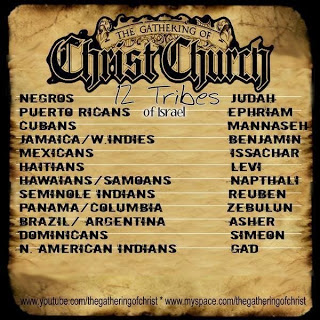

Lately, I’ve been having a significant amount of encounters with Black Israelites who also identify as Black Hebrews. For those that aren’t familiar with the Black Israelite movement, it’s essentially the African-American counterpart to the alt-right movement we see rearing its ugly head in the US. All of my encounters have ranged from hilarious to extremely unpleasant albeit entertaining. I hope that my experiences shed some light on the danger that Black Israelism presents and how its related to supremacist views today, but I also want to share them through a perspective that I believe the majority of people will never have the chance to experience.
So, let’s begin with a little history.
The roots of Black Israelism trace back to the centuries of slavery in the US. Identifying with the Hebrew bondage in Egypt, slaves would sing religious songs that were so obviously influenced by the Christianity around them. It wasn’t until the end of the Jim Crow era that the movement gained the traction we can see today when a man by the name of Ben Ammi claims to have received a vision from an angel saying that all African-Americans are the true descendants of the lost tribe of Judah and it was time to return to their promised land of Israel. [1]
From my perspective, this is where the movement already breaks down. As I’ve mentioned in a previous post, nothing good has come out of someone getting a vision from a higher power. David Koresh of the Branch Davidians, Jan Matthyas of the Anabaptists, Joseph Smith of the Mormons, Jesus of Nazareth of Christianity, L. Ron Hubbard of Scientology… the list goes on and, of course, some are worse than others. What sort of god would give the capital ‘t’ Truth to one man?
Whether it’s a person receiving a vision, falsified history, a supremacist belief, or secrecy that results in the exclusion of others, the parallels between the cults of the world are uncanny and Black Israelism is no different.
The Black Hebrews currently believe that they’re descendants of Israelites that escaped Roman Oppression in the 1st century CE. Okay, sure, but what about the others who stayed? Did every single Israelite just get killed or up and leave?
I highly doubt it. The failed messiah Shimon Bar Kochba (link) was killed in a revolt against the empire just a few decades later. Even God himself calls us a stiff-necked people over and over and over again in the Torah (see Exodus 32:9; 33:3; Deuteronomy 9:6; 2 Chronicles 36:13; Jeremiah 17:23). What I’m getting at here is the one thing I’m not only sure of, but also proud of, is that the Jews stayed and fought as a tiny people up against one of the most powerful empires in the history of the world. We don’t run, we fight. This was the mentality of Bar Kochba thousands of years ago and is still in Israel today along with our Muslim brothers in every Middle Eastern country.
Moving on, I’ve only ever heard Black Israelites address the atrocity of U.S. slavery and claim that it fulfills the prophecy laid out in this verse:
“The Lord will send you back in ships to Egypt on a journey I said you should never make again. There you will offer yourselves for sale to your enemies as male and female slaves, but no one will buy you.” Deuteronomy 28:68
Wow, it does sound a lot like slavery. To any African-American, this verse resonates like God himself is speaking to you. There’s only one thing wrong, though - the word ‘ships’.
The Hebrew word for “ships” is “oniyah” and looks like this:
אניה
Which looks exactly like the word for “sorrow” which is “aniyah”:
אניה
Of course, the difference between the words can only be identified by Hebrew speakers and even then it’s still tough because written Hebrew will almost never have vowel marks on it. I believe this word is “sorrow” and here’s my reasoning - the Jewish God is not a very specific god. He doesn’t say, “I’m going to spring up an Austrian guy that’s going to organize the extermination of 6 million Jews if you disobey me” or “if you do everything I say then I’ll give you that job you’ve always wanted.” He says something along the lines of you’ll be blessed or cursed and leaves the rest up to interpretation. God doesn’t care about the mode of transportation in which he sends you back into slavery, but he does care about making you feel remorseful for wrongdoings while you return to bondage.
However, even if it does say “ships”, we not only fulfilled that stupid prophecy but we re-fulfilled it over and over.
Take, for example, what happened after Bar Kochba’s death in 2nd century CE. After King Hadrian of the Roman Empire squashed the Jewish rebellion, he banned Jews from returning to Jerusalem and began selling them into slavery across the Empire. How did Hadrian transport the Jews? Well...
(pic of ship) [X]
I actually visited what was once one of the main slave markets in Israel which is located in one of the 4 holy cities - Hebron. I stood on the platform where my people were sold in exchange for cattle. The only thing they were feeling at the time was the desire to see their family members again and to return to their home in Israel, both of which likely never happened.
Jumping ahead to World War II, the same conclusions can be drawn from the verse in Deuteronomy. Being shipped to concentration camps and working as slaves with no regard from the Nazi captors. Not necessarily ships but pretty darn close. Standing on the platform in Auschwitz-Birkenau where the fate of families was ultimately determined will draw out powerful emotions as well.
In spite of it all, the one thing that has stayed constant throughout the centuries is our language, our religion, and our culture. Hadrian prohibited any and every Jew from practicing their religion and the Nazis hoped to wipe us out entirely, but somehow we as Jews kept our tradition alive whereas it completely died within in the realms of the Black Israelites.
Of course, there’s an explanation for this as well.
This is where the history of Black Israelism gets wild and a little reminiscent of post-WWII Japan. A Washington City Paper gives insight into a conversation between a journalist and a leader of the Black Israelites:
“Jean says that blacks remained in power in Europe until 1711, “when Charlemagne came.” Then, during the Renaissance, white families spent “thousands of dollars” to erase the “names of our forefathers.” They used acid to bleach the paintings of black kings and queens, hammers to chip the broad noses from marble statues.” [X]
....
........
............!!!!!!!
This isn’t just propaganda, it’s nonsense and raises so many questions about the mental well-being of this cult. Similar to the alt-right movement that believes every Republican candidate should body-slam a Jew (insert Ben Jacobs article link) and the cult of Scientology that convinces its members that an alien race came to earth on a 747, Black Israelism showcases extremism through fact-twisting or just pure fabrication which has led to brainwash.
I was walking through downtown Dallas when I heard a group screaming scripture over a megaphone. I used to expect the Westboro (westboro link) crowd, but after seeing the how Black Israelites have infested Facebook feeds I wasn’t that surprised to see black men covered in chanukiahs (chanukiahs link) and Stars of David like the one I wear around my neck. I had seen them just a few weeks before in California where they were out on Venice Beach screaming at white people and recruiting people of color. This time, though, I actually went over to the street corner. It was the usual setup: posters depicting a black Jesus, Uncle Tom’s Cabin, and images of slaves being sold. One guy preaching over the megaphone unless he designates his assistant to scream verses at onlookers. A few people from the group on the sidewalk handing out pamphlets. I talked to a pamphlet worker first:
Me: “Hey so is this Hebrew Israelism? What are y’all?”
Worker: “We’re not a religion, we just believe in the bible. Where are you from?”
Me: “I was born here, but I’m Jewish so I’m interested in what you have to say.”
Worker: “But where are your parents from?”
Me: “They’re also from here.”
Worker: *Stops talking to me and looks for other people to hand a pamphlet to*
Me: “Can I have one of those pamphlets?”
Worker: “It’s only for Hispanics.”
Me: “No problem, I can read Spanish.”
Worker: “No, it’s only for Hispanic people.”
Needless to say I became a little frustrated with this brick wall of a conversation. I looked at one of the signs at the setup and it looked a lot like this:

Supposed mapping of the lost tribes of Israel. [2]
Me: “So where did you get the mappings of the tribes of Israel to the people of today?”
Worker: “The bible.”
The conversation ended just about as quickly as it started. There’s the secrecy I mentioned. What harm could come from giving me a pamphlet? After some research, I discovered more about the grueling interview process of getting into a church service and how white people aren’t allowed into the congregations. I can only imagine the poison being consumed by its congregants in these “places of worship”.
Quickly realizing the futility of trying to get any content out of this man, I turned back around to listen to the main speaker. He eventually began to acknowledge me once all the African-American and hispanic people left and I was still standing there reading the propaganda while looking up the context of what they were saying. He asked for my name and if I identified with any of the tribes on that list. I gave him the same answer as the other guy but, as any Jew will say, nobody knows their tribe. He went on to correct me by saying the Israelites would be a cursed people and so we can know who is the real chosen people of “Yahweh” by the curses.
Stop right there.
This belief that curses will define the people of Israel is where my Jewish people and the Black Israelites differ and let me tell you why.
There’s a scene in The Office where Michael makes everyone act as another race for “Diversity Day”. Stanley ironically gets the black notecard and Pam gets the Jewish card. They begin talking to each other and Michael walks up and says, “Come on Olympics of Suffering right here. Slavery versus the Holocaust. Come on.”
The Office - Season 1, Episode 2. [3]
If you’re a sensible human, you can admit that both races have seen a great amount of persecution over the centuries. Going a step further, a sensible person will not try to compare the two and figure out who’s been more oppressed especially to try to figure out who’s chosen based on the oppression. Going back to my hypotheticals that I love so much, what kind of god would choose a people based on how much they suffer?
I don’t care what religious texts you have up your sleeve - the only thing being confirmed by believing in this is that your god has a really disgusting, dark side to him.
We as Jews (and African-Americans) have never tried to rub our suffering into other’s faces, much less push a religious agenda founded in suffering. Unfortunately, there are people out there that think otherwise and they’re found almost entirely within the white population and more specifically the “Make America Great Again” following.
As a Jew, I immediately realized the implications of not only MAGA but also the Black Israelite cult.
What is really under the surface?
An outlet for supremacy and anti-Semitism.
For MAGA, it’s the last push of white people to remain in control of the nation. There’s never been a moment in our history as a nation where whites who only had other whites in mind were not the majority in power, but we’re finally starting to see a shift.
As an example, let’s return to the Alabama senate race of 2017 with good ole boy Roy Moore.
With all of the news the U.S. is bombarded with each day, it’s easy to forget this controversial election. It’s become normal to an extent - a Republican incumbent who has been accused of sexual assault by a number of women but somehow everyone still rushes to their defense.
But what caught my eye in all of the fake news being reported was an article from the Chicago Tribune titled, “ 'One of our attorneys is a Jew': Kayla Moore, wife of Roy Moore, responds to anti-Semitism claims.” [X]
I laughed before I even opened it.
"Fake news," she declared, "would tell you that we don't care for Jews. I tell you all this because I've seen it all and I just want to set the record straight while they're all here."
Then, after a brief pause, for effect, she said, "One of our attorneys is a Jew. We have very close friends that are Jewish and rabbis and we also fellowship with them."
Fellowship is a word used mostly by the Christian community and it’s the most useless word I’ve ever heard with the exception of “intentional” which is like planning to try but don’t get me started on that.
I’ve experienced fellowship in many churches, whether it’s with blacks, hispanics, Indians. It’s the equivalent of having them there with no real engagement besides a welcome and a reminder to fill out a connect card so they can keep in touch.
Roy and Kayla Moore are the pinnacle of how the U.S. views diversity - an accessory.
They don’t fellowship with blacks or gays and they definitely couldn’t tell you what a Jew even is beyond being someone that doesn’t believe in Jesus.
The same goes for Black Israelites except more extreme. I had to ask the speaker in Dallas why on earth my people would claim to be Jewish if we really weren’t at some point. It goes against my every survival instinct since it’s much easier to be a white person than a Jew both today and back in the times of the Roman Empire.
The Black Israelite speaker pointed me to this verse:
“I know your works, tribulations and your poverty (but you are rich), and the blasphemy by those who say they are Jews and are not, but are a synagogue of Satan” [5]
Basically, we’re all evil. I’m talking Jews, Muslims, whites, Asians. Anybody who’s not of the tribes above is a descendant of the mysterious satan figure who strangely begins to pop up in Christian literature. The strangest one on the list for hell is the people of Africa. Somehow Black Israelites have found a way to dissociate themselves from the peoples that most closely define their ancestry.
I haven’t found any good research behind this argument, but if I had to take a guess it would be best described by a conversation I had with one of my best friends who also happens to be a Nigerian-American.
When I brought this idea of Africans not being part of the Black Israel tribes, he said:
“Why would we want to be part of their tribes? We have our own.”
DNA testing today can tell African-Americans if they originated in Cameroon or Nigeria, but that’s as far as they can go. This is a people that only has the U.S. to turn to as home and, as a result of the current climate, has become nationless.
The main thing I’ve drawn from this conversation is a reminder that African-Americans don’t know who they are. It’s hard being a people at the forefront of a new race - the African-Americans. It makes perfect sense that African-Americans that become Black Israelites would identify with the lost tribes of Israel because they have been removed from their tribes.
As a Jew, I’m cool with African-Americans relating with the persecution and mysteries of my heritage, but when the paradigm shifted from the African-American slaves identifying with Jews to Ben Ammi declaring all African-Americans are the real Jews is where the religion begins to go wrong.
Because the Black Israelites are the real Jews, us “fake Jews” of the “synagogue of Satan” have become their biggest enemy.
Not only is it so much easier to navigate life as a non-Jew, but at what point do you get off by saying that whites appropriated this Israelite culture? If they’re correct in saying that whites conquered the true (Black) Israelites, why would we adopt their practices that allowed us to conquer them in the first place?
If you look at the Jewish Bible, there are so many examples of the Jews being conquered and assimilating to the culture of their captors. Outside of Judaism, it’s the same thing as African slaves assimilating to the Christian culture of the slave owners. Nature points to survival of the fittest and we would’ve imposed our beliefs on them. Either way, my people still have the history, the language, the culture, but when asked if Black Israelites speak Hebrew or for other specifics all I got back was hate. We have proof that Jewish communities have never fully left Israel and even modern genetic testing will point any Jews lineage back to the Middle East. So, there’s not much in favor of Black Israelism minus a few verses taken out of context.
What gets me the most, however, is that they try to invalidate everything my people have gone through and continue to go through. All of those emotions I felt in Hebron or at Auschwitz don’t mean anything. For example, an article from a few years ago discusses an exchange in Philadelphia between a Black Israelite and a Jewish college student:
"I'm talking about 99 million n*****s! You talking about 6 million crackers?"
"Are you saying the Holocaust is a joke?" the Jewish man asks.
"It's a joke!" the "general" responds. "The Holocaust is a damn joke! Heil Hitler!" [4]
Let that sink in for a little bit.
I do have to say that I’m sure a movement as large as this will also have a conservative following - it’s just unfortunate that the extremists are the loudest ones no matter what religion they advocate.
Now, on to my point.
I was recently asked by a friend if I thought the world was getting better. We’re more aware of the world’s suffering today which has mobilized people of every background to help. Racism is finally at the forefront of conversation and cultures have become more accepting of every lifestyle - although some slower than others (I’m looking at you south Georgia). Diversity is on everybody’s mind whether about skin color or just diversity of thought. I didn’t answer my friend at the time, but I would say yes.
I truly believe we’re progressing as humanity and there’s no room for this type of racist ideology whether it’s with MAGA or Black Israelism.
To anybody that believes in MAGA and is content with how it’s affecting the social climate of the U.S., I urge you to take a step back and rethink your values. If they align with the racism, xenophobia, anti-Semitism, misogyny, [insert other quality MAGA has exhibited here], then I have to ask why?
Everyone wants to be special, to be chosen by God, to feel like they’re part of something larger than themselves, but nobody cares to do anything for it and somehow they’re just born into it.
One of my favorite comedians, the late George Carlin, had a great bit on what it means to be proud:
“Pride should be reserved for something you achieve or obtain on your own, not something that happens by accident of birth. Being Irish isn't a skill... it's a fucking genetic accident. You wouldn't say I'm proud to be 5'11"; I'm proud to have a predisposition for colon cancer.” [X]
Of course, I’m proud of my Jewish heritage. But it’s not because I feel specially chosen by God at birth to go to heaven or something, it’s because I see what we as Jews have achieved. We’ve overcome every odd to survive numerous atrocities, accomplished so much as a people in science and philosophy, but most importantly we’re one of the most active groups when it comes to social justice. If Judaism was only about having faith in a god, saying a bunch of prayers every morning, and disregarding this world because it’s only the afterlife that matters, it wouldn’t be much different than the other religions of the world and I wouldn’t want anything to do with it.
To anybody reading this that is a person of color, my plea is to not fall for this message of hatred.
In my experience as a Jewish person, the most powerful thing you can do is to remember where you came from and use it to guide where you’re going. I can’t emphasize it enough when I say to not forget your African-American roots in hopes of identifying with something else because it’s more clearly defined.
Most importantly, don’t forget slavery. We Jews eat bitter herbs during Passover to not only remind us of our own bitter enslavement in Egypt but to continue fighting against modern slavery and the oppressiveness that is still rampant today.
Your people may have lost your roots in Africa, but you have only just begun to sprout here in the U.S. and I have to say I’m honored to be a part of your fight.
I speak for every single Jew when I say we love y’all.
But more important than the words I say, when you’re faced with racism and oppression and inequality,
we’ll be the first to your side.
References
Ahmadiel Ben Yehuda, African Hebrew Israelites
https://www.myjewishlearning.com/article/african-hebrew-israelites/
Who Are the 12 Tribes of Israel?
http://12tribesofisraeluniting.blogspot.com/2012/07/who-are-12-tribes-of-israel.html
Mullings, Morgan.
https://thestacker.com/stories/1446/100-best-episodes-office
Racist Black Hebrew Israelites Becoming More Militant
https://www.splcenter.org/fighting-hate/intelligence-report/2008/racist-black-hebrew-israelites-becoming-more-militant